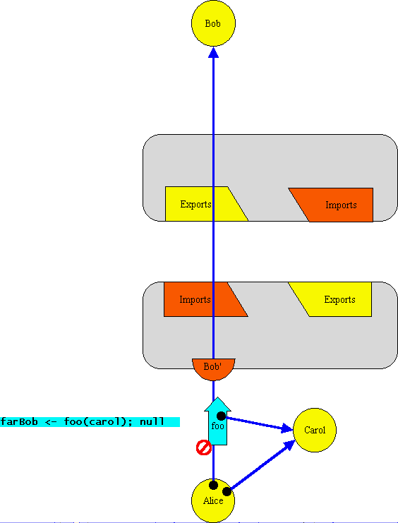
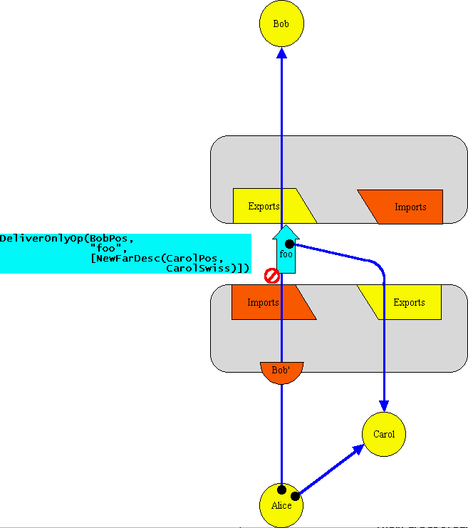
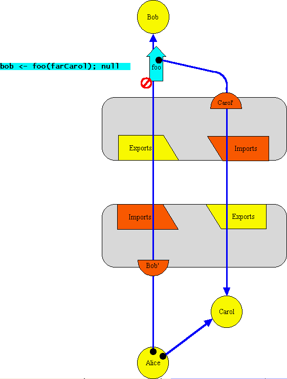

| |
CapTP
Ops: |
||||||
DeliverOnlyOp(recipPos :IncomingPos,
verb :MsgName,
args :any[]) |
Queue a delivery of verb(args..) to recip, discarding the outcome. recip <- verb(args..); null |
This corresponds to a remote message send in which the sender waives his ability to obtain the outcome. In ELib this is expressed by using E.sendOnly(..) rather than E.send(..). Unlike E.send(..), E.sendOnly is declared as returning void.
E.sendOnly(bob, "foo", carol);
In the E language, there is no way to directly express this. However, it is indirectly expressed easily enough by using a "<-" (eventual send) expression in a context where it is statically apparent that its value is ignored. (*** need to say this more precisely.) For example, the following send
bob <- foo(carol); null
clearly should be implemented as a sendOnly, since there is a following expressions ("null") in a straight-line sequence. The current E interpreter does do this optimization, and the E compiler is expected to.
For concreteness, we'll step through an example in which Carol is a PassByProxy object residing in the same vat as Alice. This will lead us into the NewFarDesc, though the nature (and the encoding/decoding) of the arguments is orthogonal from the nature of DeliverOnlyOp.
Example Scenario
| The
bottom of this diagram -- showing the relationship between Alice,
Carol, the Far reference to Bob, and the "foo" message --
shows an intra-vat message send. However, Bob lives in a different
vat, so Alice's reference to Bob is a remote reference. Therefore,
transparently within the implementation, the first leg of message's
journey will be to the object that represents the outgoing end of
the outgoing reference. The As far as DeliverOnlyOp is concerned, the remote reference to Bob may be a Far reference or a RemotePromise, and (if it's a RemotePromise) it may be an import or a question. For concreteness, this example shows Bob as an imported Far reference. On receiving the message, the Far reference serializes the arguments for transmission to the other side. Any PassByCopy arguments are simply serialized so that identical copies will be unserialized. However, Carol, we are supposing, is a PassByProxy object, so Alice's vat registers her in the Exports table for this connection, thereby allocating her an export/import position.
|
|  The message is no longer represented out of in-address-space programming language material, but rather as encoded bits on the wire, in-flight to Bob's vat. The encoding is the integer that represents DeliverOnlyOp, followed by Bob's position in the Exports table, followed by the encoding of Carol. Since Carol is a PassByProxy object, and assuming that Carol wasn't already exported over this connection, the encoding of Carol is a NewFarDesc object that will decode as a newly created Far reference to Carol in Bob's Vat. The NewFarDesc encoding must have all the information needed to create such a new Far reference, which is the position the Far reference should be assigned in the Imports table (the same as the position at which Carol is Exported), and the SwissNumber that, together with VatA's VatID, represents Carol's sameness identity. |
| 
This network message is decoded into an in-address-space message made
out of proganmming language material and eventually sent to Bob. In
other words, it is queued as if by "<-" for delivery
to Bob. The argument of the decoded message is the Far reference to
Carol that resulted from decoding the encoding of the NewFarDesc.
The message is a sendOnly kind of message, in that it will
ignores the outcome of turn it requests rather than reporting it to
an interested party.
Each of the big diagrams is linked to the next in a loop. Now that you are at the end, click on the diagram, to see the first positioned properly, and then keep clicking to see the process "animate". On Windows98, this animation effect works better in Internet Explorer 5 than in Netscape Navigator 4.6. |
Unless stated otherwise, all text on this page which is either unattributed or by Mark S. Miller is hereby placed in the public domain.
| |
|
report bug (including invalid html)
|
||||||||